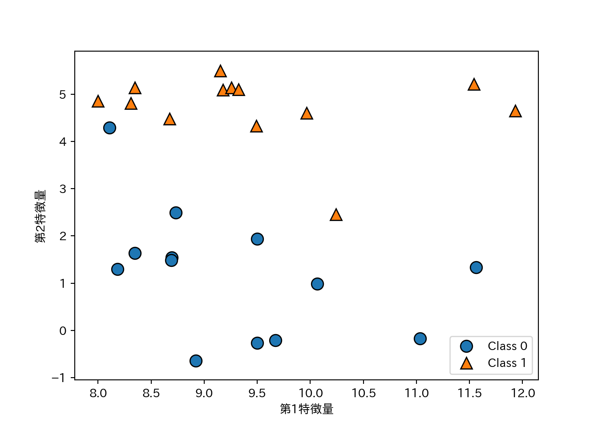
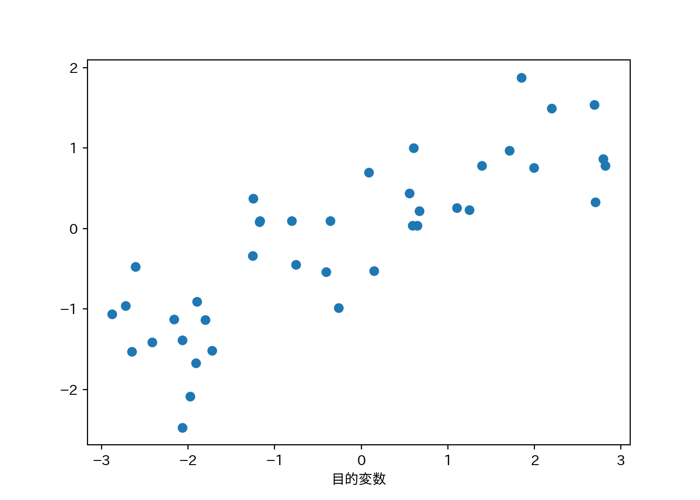
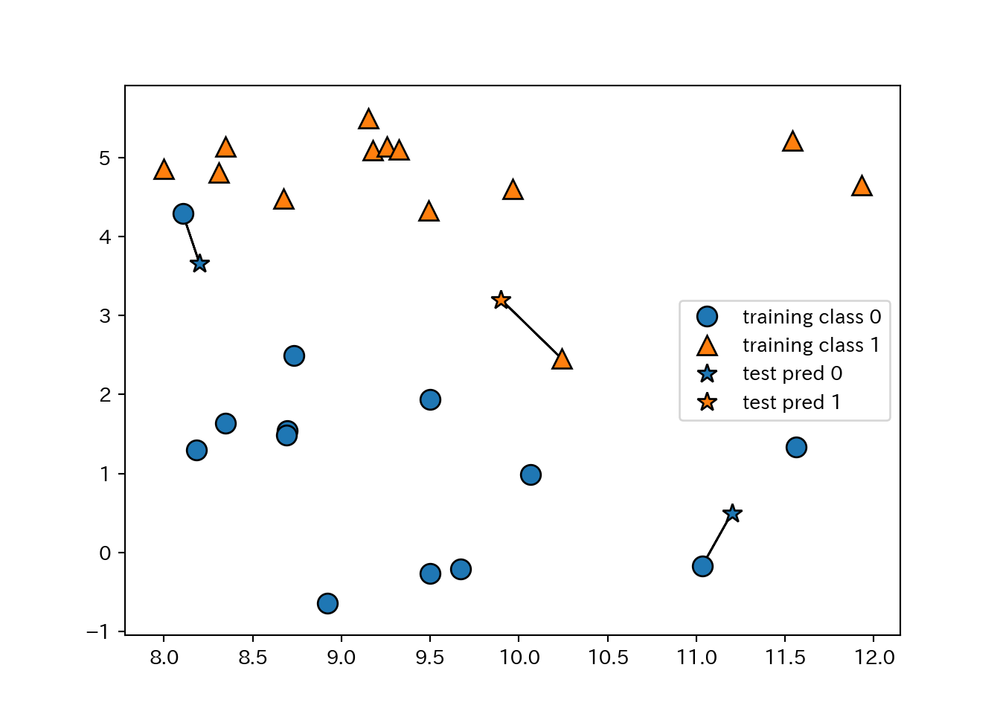

2 教師あり学習
備えます。
import numpy as np
import scipy as sp
import pandas as pd
import matplotlib.pyplot as plt
import matplotlib
matplotlib.rc('font', family='IPAexGothic') # 日本語プロット設定
import mglearn2.1 クラス分類と回帰
教師あり学習はさらに2つに分けられる。
- クラス分類: クラスラベルを予測する問題。
- 2クラス分類 (binary classification): Yes/Noみたいな2択。
- 片方を陽性 (positive)、もう片方を陰性 (negative)とする場合がしばしばある。
- 他クラス分類 (multiclass classification): もっと選択肢多いやつ。
- 2クラス分類 (binary classification): Yes/Noみたいな2択。
- 回帰: 連続値を予測する問題。
2つを区別するのは出力が連続かどうか。入力はどちらの問題でも連続の場合も離散的な場合もある。
2.2 汎化、過剰適合、適合不足
- 汎化能力: 未知のデータ(訓練に使ってないデータ)に対する正しい値を予測する能力。
- 過剰適合: 訓練データはめっちゃ正確に予測できるけど新しいデータはてんでダメという状態。
- 適合不足: 訓練データすらちゃんと予測できてないという状態。
一般的にはモデルを複雑にするほど訓練データに適合していく。適合不足でなく、過剰適合にならない適度なモデルの複雑さの時に汎化能力が最大になる。そこを目指そう。
2.2.1 モデルの複雑さとデータセットの大きさ
- モデルが複雑でも、データセットが大きければ過剰適合を避けられる。
- 適度な複雑さのモデルと十分に大きなデータセットを使うことが成功のポイント。
2.3 教師あり機械学習アルゴリズム
2.3.1 サンプルデータセット
- 人工的な単純なデータセットと、実世界の割と複雑なデータセットを使う。
2.3.1.1 人工的な単純なデータセット
単純なデータセットはmglearnで生成する。
- forge:
mglearn.datasets.make_forge()で生成する2クラス分類向けデータ。- 2つの特徴量と1つの2値目的変数をもつ。
X, y = mglearn.datasets.make_forge()
mglearn.discrete_scatter(X[:, 0], X[:, 1], y)
plt.legend(["Class 0", "Class 1"], loc = 4) # 凡例
plt.xlabel("第1特徴量")
plt.ylabel("第2特徴量")
plt.show()
plt.close()- wave:
mglearn.datasets.make_waveで生成する回帰向けデータ。- 1つの特徴量と1つの目的変数を持つ。
X, y = mglearn.datasets.make_wave(n_samples = 40)
plt.plot(X, y, 'o')
plt.xlabel("特徴量")
plt.xlabel("目的変数")
plt.show()
plt.close()2.3.1.2 実データ
実データはscikit-learnに入ってるものを使う。第1章でも説明したBunchクラスになっている。
- cancer: ウィスコンシン乳癌データセット
- 目的変数は良性(benign)と悪性(malignant)の2値。
- 特徴量は30。
- データポイントは569点。
from sklearn.datasets import load_breast_cancer
cancer = load_breast_cancer()
print(cancer.keys())
## dict_keys(['data', 'target', 'target_names', 'DESCR', 'feature_names'])
print(cancer.data.shape)
## (569, 30)
print(cancer.target_names)
## ['malignant' 'benign']
print(np.bincount(cancer.target))
## [212 357]- boston_housing: 1970年代のボストン近郊の住宅価格。
- 住宅価格の中央値が目的変数。
- 特徴量は13。
- データポイントは506点。
from sklearn.datasets import load_boston
boston = load_boston()
print(boston.data.shape)
## (506, 13)
print(boston.feature_names)
## ['CRIM' 'ZN' 'INDUS' 'CHAS' 'NOX' 'RM' 'AGE' 'DIS' 'RAD' 'TAX' 'PTRATIO'
## 'B' 'LSTAT']- 特徴量同士の積を求めたりして、新しい特徴量を導出することを特徴量エンジニアリングと呼ぶ。
- boston_housingに対し、重複ありで2つの特徴量の積を求め、データセットの拡張を試みる。
- 作業が面倒なので既に拡張したものが
mglearn.datasets.load_extended_boston()で読み込めます。
- 作業が面倒なので既に拡張したものが
X, y = mglearn.datasets.load_extended_boston()
print(X.shape)
## (506, 104)2.3.2 \(k\)-最近傍法
備えよう。
2.3.3 線形モデル
2.3.3.1 線形モデルによる回帰
線形モデルによる予測式は…
\[\hat{y} = w[0]\times x[0] + w[1]\times x[1] + ... + w[p]\times x[p] + b\]
- \(\hat{y}\)は予測値で、\(w\)と\(b\)はモデルのパラメータ。\(x\)はある一つのデータポイントの特徴量。
- 予測値は、データポイントを適当に重み付けしたもの、と見ることもできる。
waveに線形回帰を適用してプロットしてみよう。
mglearn.plots.plot_linear_regression_wave()
## w[0]: 0.393906 b: -0.031804
##
## /Users/rito/myenv/lib/python3.6/site-packages/scipy/linalg/basic.py:1226: RuntimeWarning: internal gelsd driver lwork query error, required iwork dimension not returned. This is likely the result of LAPACK bug 0038, fixed in LAPACK 3.2.2 (released July 21, 2010). Falling back to 'gelss' driver.
## warnings.warn(mesg, RuntimeWarning)
plt.show()
線形モデルを利用した回帰にはいろいろなアルゴリズムがあって、それぞれ以下の点で異なっている。
- どのようにパラメータ\(w\)と\(b\)を学習するか。
- モデルの複雑さをどのように制御するのか。
2.3.3.2 線形回帰(通常最小二乗法)
- 予測値と真値の平均二乗誤差 (mean squared error) を最小にするようなパラメータを求める。
- 線形回帰には複雑さを制御するパラメータがない。できない。
from sklearn.model_selection import train_test_split
from sklearn.linear_model import LinearRegression
X, y = mglearn.datasets.make_wave(n_samples = 60)
X_train, X_test, y_train, y_test = train_test_split(X, y, random_state = 42)
lr = LinearRegression().fit(X_train, y_train)- \(w\)は係数 (coefficient)と呼ばれ、
coef_に格納される。 - \(b\)は切片 (intercept)と呼ばれ、
intercept_に格納される。
print(lr.coef_)
## [0.39390555]
print(lr.intercept_)
## -0.03180434302675976- 訓練データから得られた属性にアンダースコアを付けるのはscikit-learnの慣習である。
coef_は特徴量1つに対して1つの値をもつNumPy配列となる。- 線形回帰の性能は決定係数\(R^2\)として求められる。
print(lr.score(X_train, y_train))
## 0.6700890315075756
print(lr.score(X_test, y_test))
## 0.65933685968637ここで訓練セットとテストセットの\(R^2\)があんまり違わないのは（予測性能はともかく）過剰適合していないことを示している。通常、特徴量が多いほど過剰適合のリスクが高まる。拡張したboston_housingで確認してみよう。
X, y = mglearn.datasets.load_extended_boston()
X_train, X_test, y_train, y_test = train_test_split(X, y, random_state = 0)
lr = LinearRegression().fit(X_train, y_train)\(R^2\)を訓練セットとテストセットで比較してみよう。
print(lr.score(X_train, y_train))
## 0.9523526436864234
print(lr.score(X_test, y_test))
## 0.6057754892935417両者に乖離が見られるのは、過剰適合している可能性がある。
モデルの複雑さを制御できれば良いのだが、線形回帰にはそのためのパラメータがない。パラメータを導入する方法としてリッジ回帰がある。